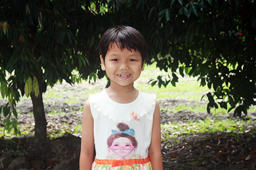
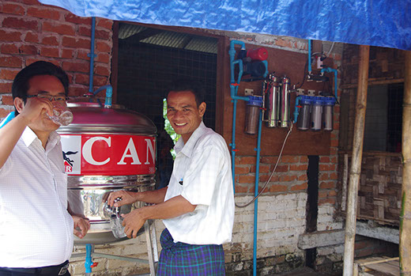
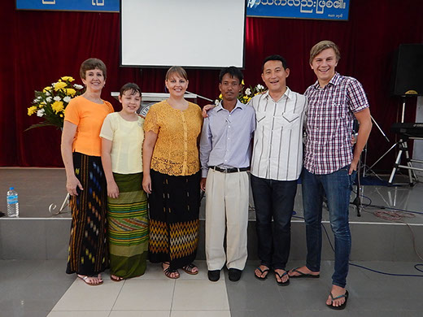

You can stay up to date with what’s happening in the areas AAMA is working by receiving our AAMA update by email, usually once a month, or on other occasions when there is a need for prayer in some situations or some sort of emergency occurs in the field. Enter your email address below to join AAMA update.

Child Sponsorship
Many AAMA sponsored children grow up to be leaders in their community, employed, contributing to the future. You can sponsor a child through AAMA in India or in Myanmar, and help change their future for good. For every dollar given in child sponsorship, 100% goes to this purpose, none to administration.


Field Worker Sponsorship
You can personally sponsor a field worker in Myanmar, India or Philippines for just $50 per month. A field worker may be a church planter, an evangelist working in a rural area, or a youth worker. They may run literacy and health education programs, and early childhood programs. Field workers in urban areas may be sponsored for $100 per month, as costs are higher in cities.

Tax Deductibe Donations
Donations to approved AAMA projects attract tax deductibility, in Australia. AAMAwater projects, natural disaster relief and rebuilding projects, community medical services etc are examples of approved projects for tax deductibility. You will be issued with a receipt for tax deductible giving.

Short Term Mission Teams
AAMA takes short term mission teams to India, Philippines, Myanmar and other areas. AAMA short term mission teams may have a particular focus, e.g. a teaching team (could by anything from music, to motor vehicle repair), a team training locals in first aid, a team helping with medical clinics, helping in children’s home, or support and encouragement of local field workers and their teams.
Prayer Support
Please join our AAMA update to receive details of prayer requests. We value the contribution of many who pray regularly for AAMA’s work and our partners in the field.
A Visit from an AAMA Representative
Contact us to request a visit from one of us at AAMA, to talk to your youth group, your study group, work group, club, church. Hear the stories. Learn first-hand how you can share in helping others.